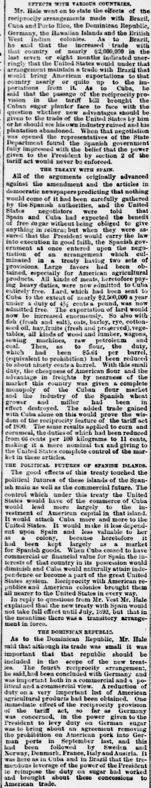
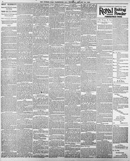

See the full pageVer la página completaBale said that although its trade was small it was importantBale dijo que, aunque su comercio era pequeño, era importante
The Evening Star reported on Senate debates regarding trade policy, where Senator Hale argued that despite its modest commercial volume, the Dominican Republic was an important partner in the reciprocity treaty program. Hale explained that the executive power to impose retaliatory sugar tariffs had served as vital leverage to secure trade concessions for American agricultural and manufactured goods internationally.El Evening Star informó sobre los debates en el Senado en torno a la política comercial, en los cuales el senador Hale sostuvo que, a pesar de su modesto volumen comercial, la República Dominicana era un socio importante en el programa de tratados de reciprocidad. Hale explicó que la facultad del poder ejecutivo para imponer aranceles de represalia al azúcar había servido como una herramienta de presión fundamental para obtener concesiones comerciales a escala internacional para los productos agrícolas y manufacturados estadounidenses.
FULL TEXT:TRADUCCIÓN:
EFFECTS WITH VARIOUS COUNTRIES.EFECTOS CON VARIOS PAÍSES.
Mr. Hale went on to state the effects of the reciprocity arrangements made with Brazil, Cuba and Porto Rico, the Dominican Republic, Germany, the Hawaiian Islands and the British West Indian colonies. As to Brazil, he said that the increased trade with that country of nearly $2,000,000 in the last seven or eight months indicated unerringly that the United States would under that arrangement maintain a trade with Brazil that would bring American exportations to that country nearly or quite up to the importations from it. As to Cuba, he said that the passage of the reciprocity provision in the tariff bill brought the Cuban sugar planter face to face with the question whether new advantages should be given to the trade of the United States by him or he should see his own industry ruined and his plantation abandoned. When that negotiation was opened the representatives of the State Department found the Spanish government fully impressed with the belief that the power given to the President by section 2 of the tariff act would never be enforced.El Sr. Hale continuó declarando los efectos de los arreglos de reciprocidad hechos con Brasil, Cuba y Puerto Rico, la República Dominicana, Alemania, las Islas Hawaianas y las colonias británicas de las Indias Occidentales. En cuanto a Brasil, dijo que el comercio aumentado con ese país de casi $2,000,000 en los últimos siete u ocho meses indicaba infaliblemente que los Estados Unidos bajo ese arreglo mantendrían un comercio con Brasil que llevaría las exportaciones estadounidenses a ese país casi o totalmente al nivel de las importaciones desde él. En cuanto a Cuba, dijo que la aprobación de la disposición de reciprocidad en el proyecto arancelario puso al hacendado azucarero cubano cara a cara con la cuestión de si nuevos ventajas debían darse al comercio de los Estados Unidos por él o debería ver su propia industria arruinada y su plantación abandonada. Cuando esa negociación se abrió los representantes del Departamento de Estado encontraron al gobierno español plenamente impresionado con la creencia de que el poder dado al Presidente por la sección 2 de la ley arancelaria nunca sería hecho cumplir.
THE TREATY WITH SPAIN.EL TRATADO CON ESPAÑA.
All of the arguments originally advanced against the amendment and the articles in democratic newspapers predicting that nothing would come of it had been carefully gathered by the Spanish authorities, and the United States negotiators were told that Spain and Cuba had expected the benefit of free sugar without being obliged to give anything in return; but when they were assured that the President would carry the law into execution in good faith, the Spanish government at once entered upon the negotiation of an arrangement which culminated in a treaty having two sets of provisions. Large favors had been obtained, especially for American agricultural products. All kinds of meats, heretofore paying heavy duties, were now admitted to Cuba entirely free. Lard, which had been sent to Cuba to the extent of nearly $2,500,000 a year under a duty of 4 1/2 cents a pound, was now admitted free. The exportation of lard would now be increased enormously. So also with fish (fresh and salt), oats, barley, rye, cotton-seed oil, hay, fruits (fresh and preserved), vegetables, all kinds of wood and lumber, wagons, sewing machines, raw petroleum and coal. Then, as to flour, the duty, providing which had been $5.61 per barrel, (equivalent to prohibition) had been reduced to about ninety cents a barrel. With this small duty, the cheapness of American flour and the advantage in freights by nearness of the market this country was given a complete monopoly of the Cuban flour market and the industry of the Spanish wheat grower and miller had been in effect destroyed. The added trade gained with Cuba alone on this would prove the wisdom of the reciprocity feature of the tariff act of 1890. The same results applied to corn and cornmeal, the duties of which had been reduced from 66 cents per 100 kilograms to 11 cents, making it a mere nominal tax and giving to the United States complete control of the market in these articles.Todos los argumentos originalmente avanzados contra la enmienda y los artículos en periódicos demócratas prediciendo que nada vendría de ella habían sido cuidadosamente recogidos por las autoridades españolas, y a los negociadores de los Estados Unidos se les dijo que España y Cuba habían esperado el beneficio del azúcar libre sin estar obligados a dar nada a cambio; pero cuando se les aseguró que el Presidente llevaría la ley a ejecución de buena fe, el gobierno español entró de inmediato en la negociación de un arreglo que culminó en un tratado con dos conjuntos de disposiciones. Grandes favores habían sido obtenidos, especialmente para productos agrícolas estadounidenses. Todas las clases de carnes, antes pagando fuertes derechos, ahora eran admitidas en Cuba enteramente libres. La manteca, que había sido enviada a Cuba hasta la extensión de casi $2,500,000 al año bajo un derecho de 4 1/2 centavos por libra, ahora era admitida libre. La exportación de manteca ahora sería aumentada enormemente. Así también con pescado (fresco y salado), avena, cebada, centeno, aceite de semilla de algodón, heno, frutas (frescas y preservadas), vegetales, toda clase de madera y maderos, vagones, máquinas de coser, petróleo crudo y carbón. Entonces, en cuanto a harina, el derecho, proveyendo el cual había sido de $5.61 por barril, (equivalente a prohibición) había sido reducido a unos noventa centavos por barril. Con este pequeño derecho, la baratura de la harina estadounidense y la ventaja en fletes por la cercanía del mercado a este país se le dio un monopolio completo del mercado cubano de harina y la industria del cultivador de trigo y molinero español había sido en efecto destruida. El comercio añadido ganado solo con Cuba en esto probaría la sabiduría del rasgo de reciprocidad de la ley arancelaria de 1890. Los mismos resultados se aplicaban al maíz y la harina de maíz, cuyos derechos habían sido reducidos de 66 centavos por 100 kilogramos a 11 centavos, haciéndolo un impuesto meramente nominal y dando a los Estados Unidos control completo del mercado en estos artículos.
THE POLITICAL FUTURES OF SPANISH ISLANDS.EL FUTURO POLÍTICO DE LAS ISLAS ESPAÑOLAS.
The good effects of this treaty touched the political futures of these islands of the Spanish main as well as the commercial future. The control which under this treaty the United States would have of the commerce of Cuba would lead more largely to the investment of American capital in that island. It would attach Cuba more and more to the United States. It would make it less dependent upon Spain and less valuable to her as a colony, because heretofore it had been kept largely as a market for Spanish goods. When Cuba ceased to have commercial or financial value for Spain the interests of that country in its possession would diminish and Cuba would naturally attain independence or become a part of the great United States system. Reciprocity with American republics and American colonies brought them all nearer to the United States in every way.Los buenos efectos de este tratado tocaban los futuros políticos de estas islas del mar español así como el futuro comercial. El control que bajo este tratado los Estados Unidos tendrían del comercio de Cuba conduciría más ampliamente a la inversión de capital estadounidense en esa isla. Ataría a Cuba más y más a los Estados Unidos. La haría menos dependiente de España y menos valiosa para ella como colonia, porque antes había sido mantenida en gran parte como un mercado para mercancías españolas. Cuando Cuba cesara de tener valor comercial o financiero para España los intereses de ese país en su posesión disminuirían y Cuba naturalmente alcanzaría la independencia o se convertiría en parte del gran sistema de los Estados Unidos. La reciprocidad con repúblicas americanas y colonias americanas las acercó a todas más a los Estados Unidos en todo sentido.
In reply to questions from Mr. Vest Mr. Hale explained that the new treaty with Spain would not take full effect until July, 1892, but that in the meantime there was a transitory arrangement in force.En respuesta a preguntas del Sr. Vest el Sr. Hale explicó que el nuevo tratado con España no tomaría efecto completo hasta julio de 1892, pero que en el entretanto había un arreglo transitorio en vigor.
THE DOMINICAN REPUBLIC.LA REPÚBLICA DOMINICANA.
As to the Dominican Republic, Mr. Hale said that although its trade was small it was important that that republic should be included in the scope of the new treaties. The fourth reciprocity arrangement, he said, had been concluded with Germany and was important both in a commercial and a political and a commercial view. A reduction of duty on a very important list of American agricultural products had been obtained. One immediate effect of the reciprocity provision of the tariff act, so far as Germany was concerned, in the power given to the President to levy duty on German sugar was to bring about an agreement removing the prohibition on American pork into German ports in September last, and this had been followed by Sweden and Norway, Denmark, France, Italy and Austria. It was here as in Cuba and in Brazil that the tremendous leverage of the power of the President to reimpose the duty on sugar had worked and brought about these concessions to American trade.En cuanto a la República Dominicana, el Sr. Hale dijo que aunque su comercio era pequeño era importante que esa república fuera incluida en el alcance de los nuevos tratados. El cuarto arreglo de reciprocidad, dijo, había sido concluido con Alemania y era importante tanto en un punto de vista comercial como en uno político y comercial. Una reducción de derechos en una lista muy importante de productos agrícolas estadounidenses había sido obtenida. Un efecto inmediato de la disposición de reciprocidad de la ley arancelaria, en lo que respecta a Alemania, en el poder dado al Presidente para recaudar derechos sobre el azúcar alemán fue lograr un acuerdo removiendo la prohibición sobre el cerdo estadounidense en puertos alemanes en septiembre pasado, y esto había sido seguido por Suecia y Noruega, Dinamarca, Francia, Italia y Austria. Fue aquí como en Cuba y en Brasil que el tremendo apalancamiento del poder del Presidente para reimponer el derecho sobre el azúcar había funcionado y logrado estas concesiones al comercio estadounidense.
Evening Star. Washington, D.C., January 28, 1892.
See the original at the Library of CongressVer el original en la Biblioteca del Congreso
Published by: W.D. Wallach & Hope, 1854-1972.Publicado por: W.D. Wallach & Hope, 1854-1972.
Edition: Edition 1Edición: edición 1
Page: 6Página: 6
Frequency: daily (1854–1972)Frecuencia: diario (1854–1972)
Collection: Chronicling America, Library of CongressColección: Chronicling America, de la Biblioteca del Congreso
LCCN: sn83045462LCCN: sn83045462
ISSN: 2331-9968ISSN: 2331-9968
OCLC: 2260929OCLC: 2260929
Rights: public domain, according to the Library of CongressDerechos: dominio público, según la Biblioteca del Congreso